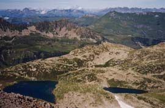

les lacs Jovet (2454 m)

Départ : parking sous ND de la Gorge (1185 m)
Aller : 9 km, +1283 m, 223 min
Retour : 9 km, - 1283 m, 170 min
Difficulté : E
Période : juillet - septembre
Remarque : -
Bibliographie : 30 balades en famille autour de St Gervais, itinéraire 26 (JM Jeudy, éd Didier-Richard 1996, ISBN 2-7038-0150-5.
En face l'église ND de la Gorge, prendre le GR / TMB qui monte une voie dite romaine vers le "pont romain" (il date de 1774 ...) ; peu avant, une pancarte signale le détour vers le pont naturel (arche où passe le ruisseau).
On rejoint l'itinéraire AsF 16.2.5 (cf page 115), qu'on suit jusqu'au Plan Jovet.
Prendre à G le sentier des lacs. Juste après le 1° lac, une sente remonte la combe à G vers l'arête et la pointe Nord.
Photo : vue du col de l'Enclave, les lacs et la Pointe S (le départ de la sente vers la Pointe N se voit, le sommet est plus à D)